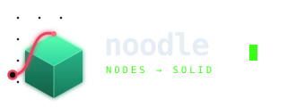
Node-based parametric CAD on build123d. Wire nodes, get solid geometry — transpiled to Python, rendered live, and drivable by an AI coding agent.
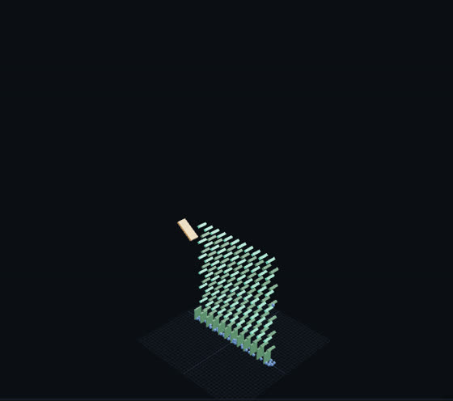
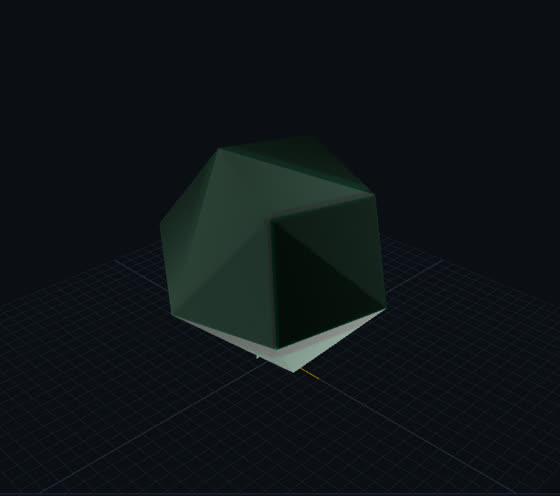
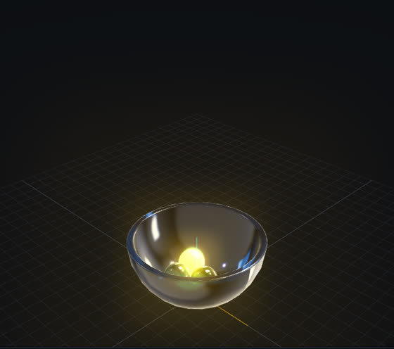
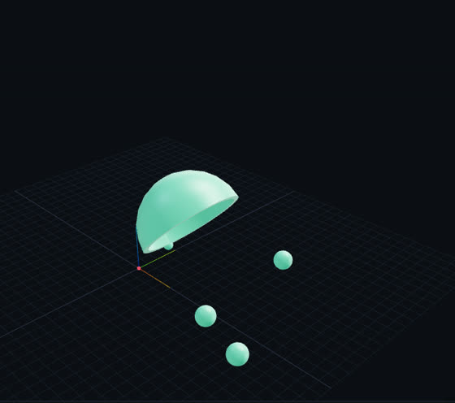
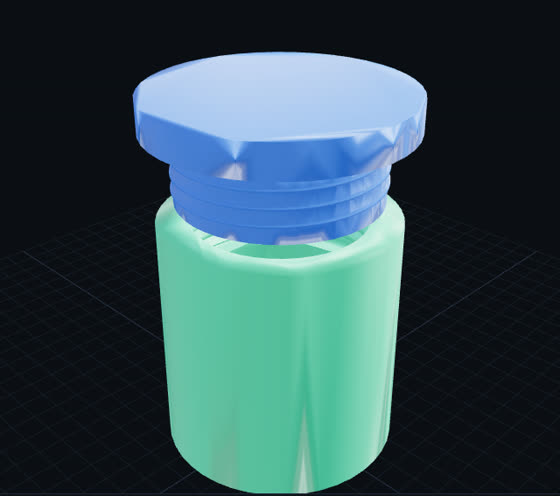
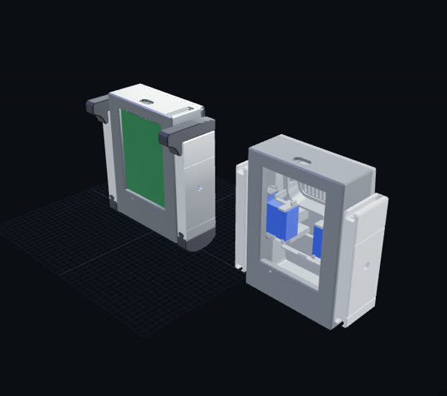
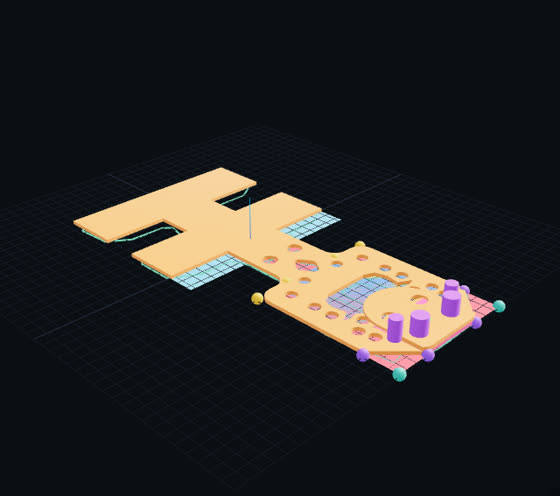
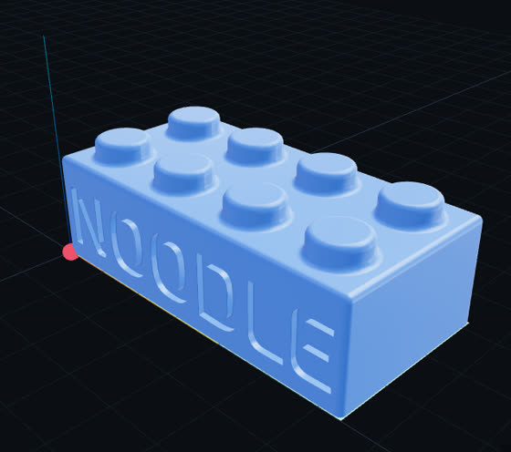
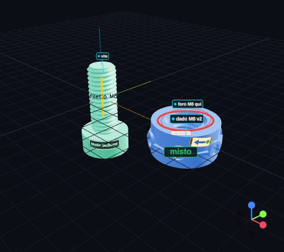
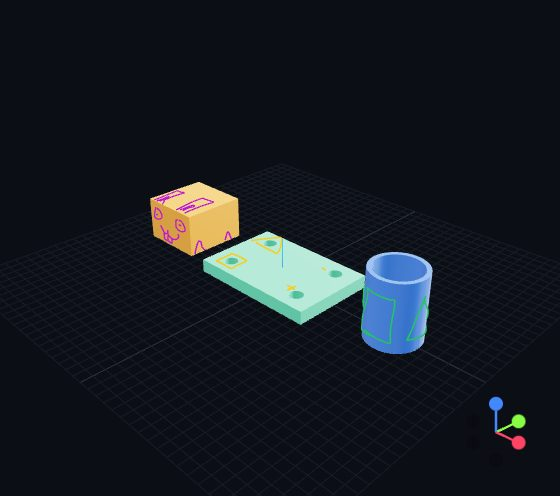
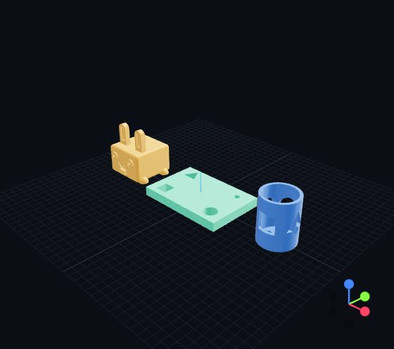
An agent calls cad_snapshot and sends a URL. The link stays on that result while
the workflow moves on.
Agents write long CodeBlocks. Instead of making them assemble catalogue nodes, noodle reads the block's structure from its AST — the code is never rewritten.
cad_codeblock_sections.An agent edits the graph over MCP or HTTP while you have it open.
/measure and /lint for geometry facts.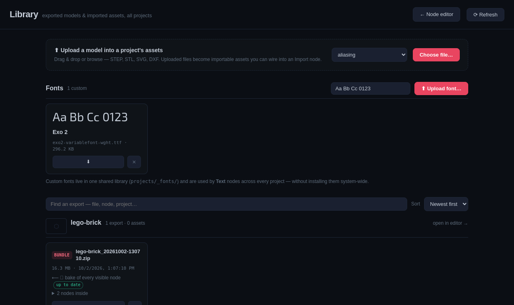